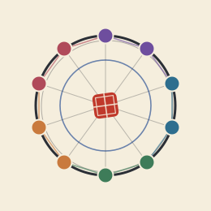
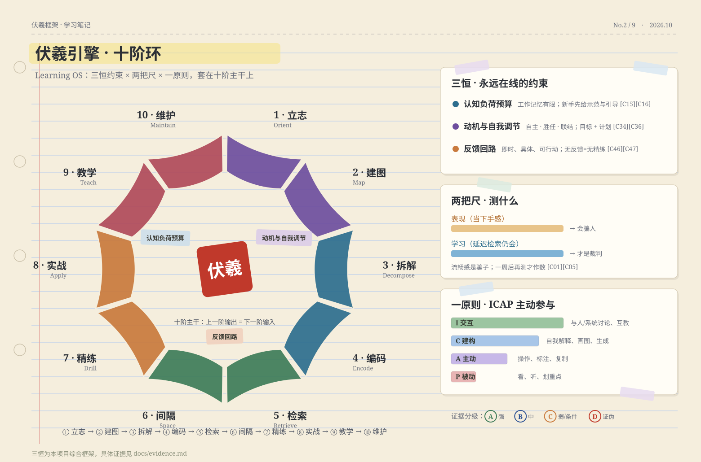
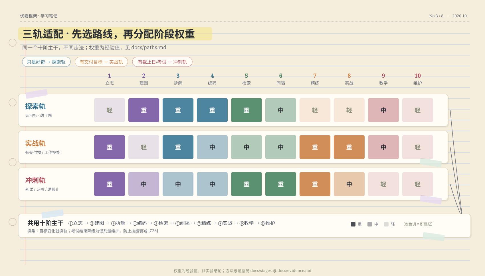

伏羲框架上一阶的产出，是下一阶的输入。每张卡片点进 GitHub 查看完整详解（方法卡 / 工具 / 自测 / 误区 / AI 用法）。
十阶是主干；三恒是永远在线的约束；两把尺决定你测什么；一原则决定学习深度。

认知负荷预算（新手要给示范与引导）· 动机与自我调节（自主/胜任/联结）· 反馈回路（无反馈=无精练）。
表现≠学习。「当下手感」会骗人；只有延迟检索测出来的，才是真的学会了。
交互 > 建构 > 主动 > 被动。能讨论、能生成、能自测，就别只看和听。
每个方法都标等级：A 强 / B 中 / C 弱或条件 / D 证伪。等级为本项目对证据的综合判断。
不靠感觉，靠论文。完整 30 条结论与 70+ 引用（含数字口径）都在 docs/evidence.md。
| 结论 | 关键数字 | 等级 |
|---|---|---|
| 检索练习（测试效应） | 一周后约 80% vs 约 35%（检索 vs 重读） | A |
| 间隔重复 | 254 项实验；最佳间隔 ≈ 目标保持期的 10–20% | A |
| 交错练习（数学 RCT） | 延迟测验 61% vs 38%（d=0.83） | A |
| FSRS 调度算法 | 2.2 亿学习日志建模，+12.6%；已内置 Anki | A |
| 刻意练习的解释力 | 棋类 26% / 音乐 21% / 体育 18% / 教育 4% / 职业 <1% | B |
| 无护栏 AI 的风险 | 练习期 +48%，撤除 AI 后考试 −17% | B |
| 学习风格 / 学习金字塔 / 速读 / 脑训远迁移 | 均无可靠证据 | D |
50+ 个工具，按阶段索引、逐链接核验。只用你真正会打开的，别收集徽章。
Anki · FSRS4Anki · AnkiDroid · org-fc · genanki
Obsidian · Logseq · Zettlr · SilverBullet · Quartz
markmap · Excalidraw · draw.io · Mermaid · tldraw
freeCodeCamp · Exercism · The Odin Project · Lean 4 · KaTrain
Yomitan · asbplayer · mpvacious · Whisper · LanguageTool
Habitica · Loop · Super Productivity · ActivityWatch
Ollama · llama.cpp · Mr.-Ranedeer-AI-Tutor
Zotero · Better BibTeX · Tesseract · Xournal++
同一套十阶，不同走法。先回答「有截止日吗？有交付目标吗？」，再分配阶段权重。

无目标、想了解。重心：建图 → 拆解 → 编码 → 检索。结构化漫游，随手建卡。
有交付目标。重心：立志 → 拆解 → 精练 → 实战。先粗框架，直接做，缺啥补啥。
考试 / 硬截止。重心：立志 → 检索 → 间隔 → 精练。考纲倒推地图，模考即检索。
AI 可以是加速器，也可以是毒药 —— 差别就在这七条。证据：Bastani 2025（PNAS）· Fan 2025（BJET）· Kestin 2025（Sci Rep）。
15 条完整辟谣见 docs/myths.md。先看最常踩的：
| 说法 | 真相 | 等级 |
|---|---|---|
| 「我是视觉型学习者」 | 学习风格匹配假设缺乏证据（Pashler et al., 2008） | D |
| 划线、重读、抄书有用 | 低效用技术，只能热身（Dunlosky et al., 2013） | D |
| 速读（高速+高理解） | 与阅读科学不符（Rayner et al., 2016） | D |
| 「1 万小时定律」 | 练习质量的函数，不是时长的函数（Macnamara et al., 2014） | D |
| 把学习全交给 AI | 撤除后表现下降；依赖与元认知懒惰是真实风险 | 风险 |
不要先「学好学习方法」再开始 —— 从今天要学的东西直接开始。